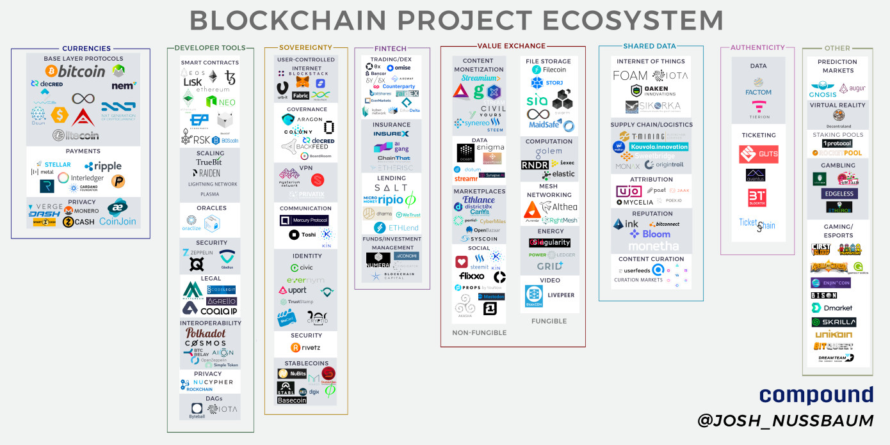

简介
Gun: A realtime, decentralized, offline-first, graph database engine.
| Map | Project | Slug |
|---|---|---|
| Authenticity | Factom | Factom is a distributed, decentralized protocol running on top of Bitcoin. |
| Fintech | 0x | 0x is an open, permissionless protocol allowing for ERC20 tokens to be traded on the Ethereum blockchain. |
| Sovereignty | MetaMask | MetaMask is a bridge that allows you to visit the distributed web of tomorrow in your browser today. |
| Currency | BitCoin | Open source P2P money |
| Deveploer Tool | Ethereum | Ethereum is a distributed public blockchain network. |
| Shared Data / LoT | IOTA | The IOTA protocol is a Distributed Ledger Technology |
| Database | Gun | A realtime, decentralized, offline-first, graph database engine. |
| Value Exchange | Filecoin | A blockchain-based storage network and cryptocurrency. |
| Protocol | IPFS | Peer-to-peer hypermedia protocol |
Types Discuss
Permissionless
- Permissionless Blockchain
- Public Permissioned Blockchain
- Private Permissioned Blockchain
MarkMap
